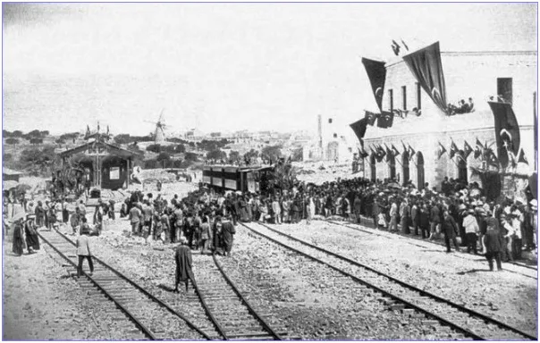
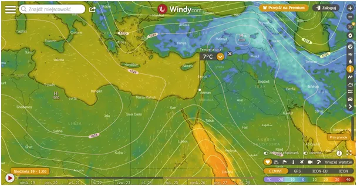
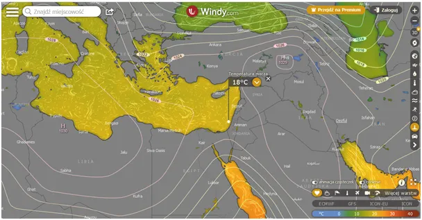
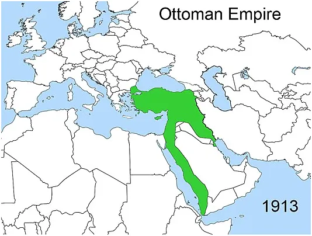
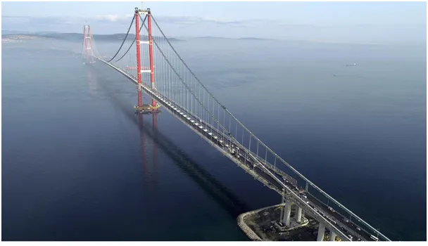

Ziemia Obiecana to fantastyczna miejscówka.
Jesteśmy właśnie w okresie, gdy nad Morzem Śródziemnym jest w skali roku najchłodniej, rano jest zaledwie 7 st. a wody morza mają ciągle 18 st.



Zdolność wody do magazynowania ciepła jest nieporównywalnie większa niż powietrza, choćby ze względu na masę. Kostka wody o rozmiarze metra waży 1000 kilo, powietrza w takiej kostce jest zaledwie 1,1 kg. Półwysep Synaj oddziela Azję od Afryki a otaczające go Morze Czerwone jest połączone z Oceanem Indyjskim. Takie miejsce to bazar świata. Pamiętajmy, że przez tysiące lat naszej cywilizacji Amerykę znali tylko Eskimosi.
Na zdjęciu widzimy pociąg z Hajfy do Jerozolimy w 1892 roku. Nie bez powodów widzicie tam tureckie sztandary.

Cały kluczowy obszar między Oceanem Indyjskim a Europą był kontrolowany przez Turków, wcześniej przez wieki Osmanowie władali też Egiptem i Północną Afryką. W tym roku mija 100 lat od Traktatu w Lozannie, gdzie zakończono dzielić łupy po Pierwszej Wojnie Światowej.
Turcy stracili wtedy ważne tereny, ale dzięki silnej armii utrzymali swoje państwo w znanych nam granicach. Po upadku monarchii od 1923 jako republika Turcy w tym roku świętują swoje 100 lecie. Mimo, że obszar i ludność Turcji są dwukrotnie większe od Polski, trudno porównywać te dwa potencjały. Jak widzicie na pierwszej mapce, z wyjątkiem wybrzeża panuje tam teraz sroga zima. Większość kraju to wysokie góry i płaskowyże zasypane teraz śniegiem.
Turcy od dawna przygotowują się na 100. lecie państwa, z którego są bardzo dumni. W porównaniu z krajami regionu to jest silne stabilne państwo prowadzące swoją niezależną politykę. W latach 80`tych, odzyskali północną część Cypru, kontrolowanego de facto przez Brytyjczyków, turecka armia z tej wyspy ma potencjał np. zamknięcia Kanału Sueskiego. Wojna na północy Morza Czarnego uczyniła z Turcji jedyny pomost Nowego Jedwabnego Szlaku.

Jednocześnie kontrolują cieśniny czarnomorskie i mogą zatrzymać (lub nie) rosyjską flotę w drodze do Syrii. Będąc w NATO jedną z najsilniejszych armii mają bardzo antyamerykańską retorykę i ograniczenia w dostępie do najnowszej broni NATO. Jest wiele powodów by bliżej poznać Turcję, nie tylko doskonała kuchnia.
Paweł Klimczewski